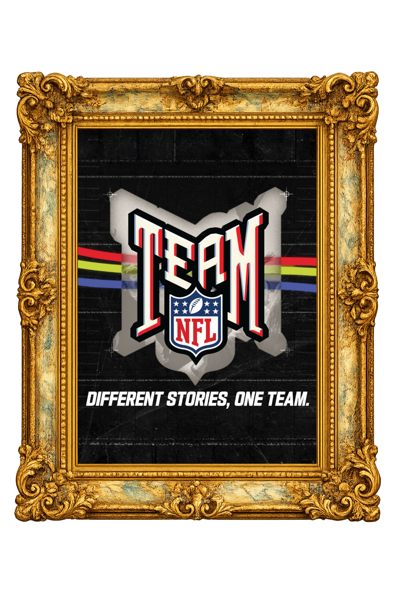
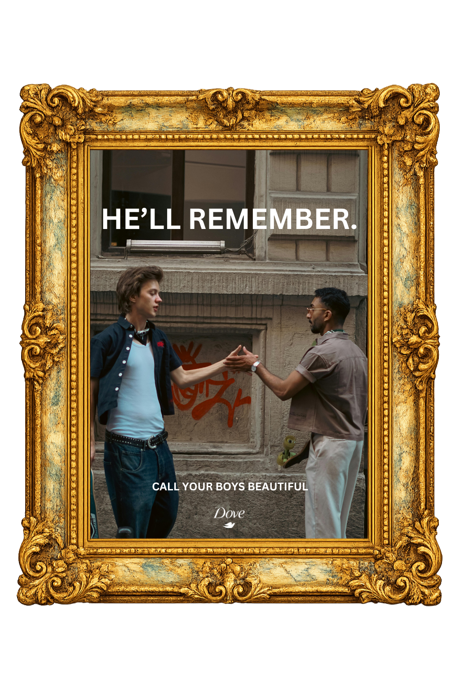
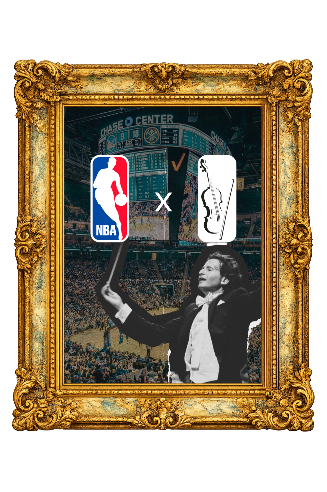

The Museum of Thought
Bryce Peterson
Advertising strategist turning consumer tensions into inspiring brand actions.

strat·e·gist
/ˈstradəjəst/
Featured Exhibits
Work on Display

Exhibit 01
How can the NFL unify their youth-focused health and wellness initiatives?
Unites NFL youth initiatives under one banner: Team NFL.

Exhibit 02
How do we help men build real confidence in an AI-driven beauty culture?
Turns AI-era male insecurity into a human validation platform: Call Your Boys Beautiful.

Exhibit 03
How do we make watching the NBA feel worth the royal price?
Reframes cost frustration into premium feeling through a cinematic league-and-orchestra partnership.
Curator’s Note
Take Every Opportunity to Do It Better Than the Last
Artist Statement
I love locking in and searching through sources to find new angles that turn into insights. These insights provide opportunities for brands to grow not just by encouraging a purchase but by solving real problems. I want to use my determination to create ads that inspire a better world.
Life is meant for improvement, is it not?
Read About the Artist →
Inquiries
Let’s Talk Strategy
Please reach out for portfolio conversations, internships, freelance strategy projects, mentorship, or thoughtful brand problems.